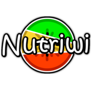

Vincent Guillemot

- Biostatisticien
- Intégration de données
Amaury Vaysse
- Bioinformaticien
- Analyse de données de séquençage
Vincent Guillemot
Amaury Vaysse
Allez sur www.kahoot.it ou sur l’application Kahoot!
Plutôt le matin
Plutôt l’après-midi
Avant le TP (dernier jour) :

Vous devez avoir une idée des analyses à réaliser sur vos données.
Pour favoriser l’interactivité de ce cours, voici ce que je vous propose :
Composition de produits alimentaires (https://ciqual.anses.fr/)
Nutriwi (https://www.nutriwi.com/)
